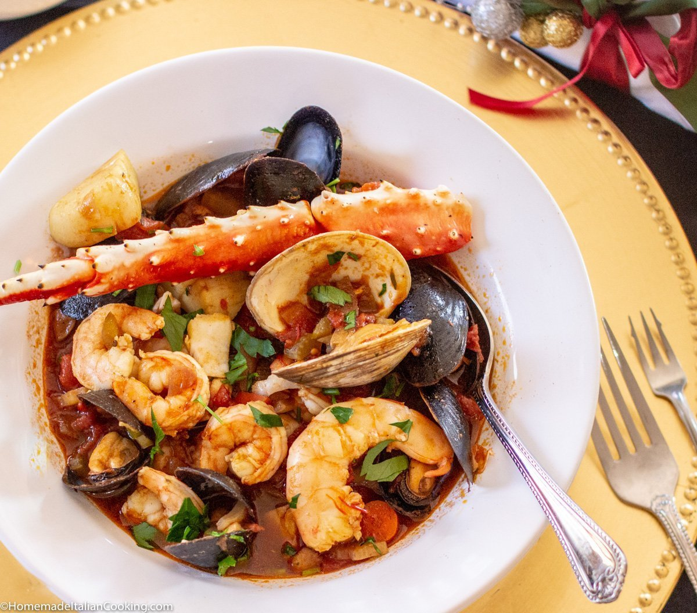
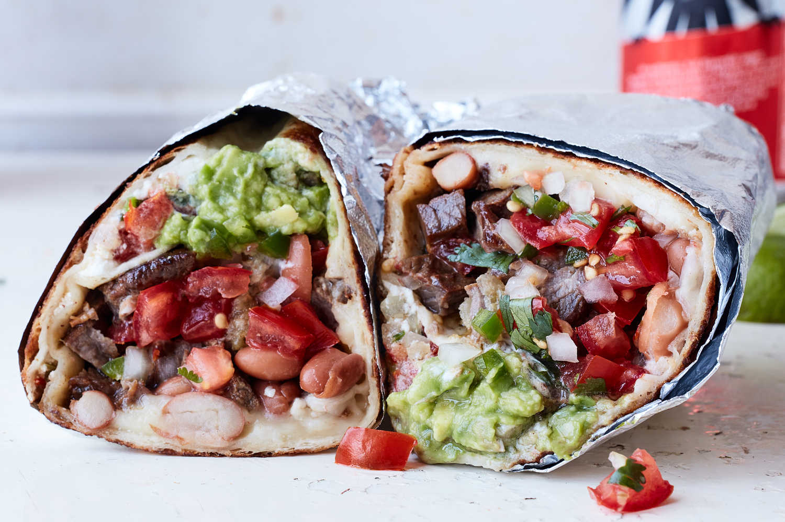
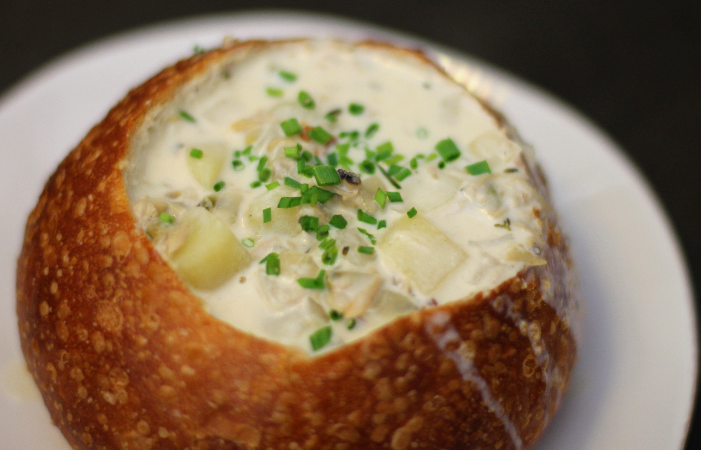

Street Food of San Francisco

Cioppino

Burrito
San Francisco boasts a diverse and innovative food scene, known for its iconic dishes like sourdough bread, cioppino, and Mission-style burritos, as well as its strong farm-to-table movement and thriving restaurant scene. The city's culinary landscape is a blend of cultural influences, from Italian-American seafood stews to Chinese-inspired dishes, making it a foodie paradise.
Best places to have San Francisco street food.

